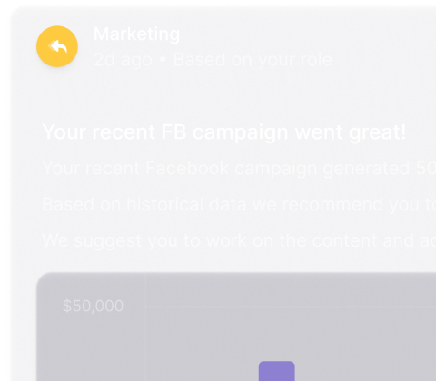
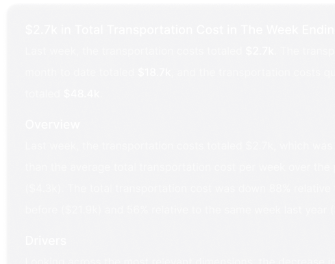
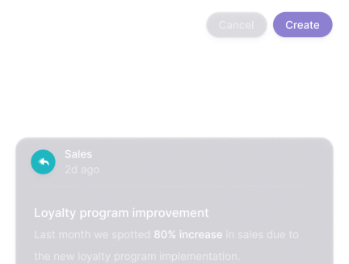

Within your data lies a story, let Narrative BI tell it.
With our secure and user-friendly solution, your company can easily explore a massive amount of data and get meaningful insights from that data in seconds.
Personalized Anomaly Detection
Narrative BI’s proprietary outlier-detection algorithm removes human bias and brings hidden insights that can be missed by traditional BI tools and data analysts.
Narrative BI delivers personalized insights to the user regardless of their group, title, or challenge.

Make Quicker Decisions
Narrative BI users receive meaningful insights that lead to faster data-driven decisions.
By automating insights, users are empowered to drive the business forward without asking specialists to perform ad-hoc queries which slows them down.
Data Narratives
Narrative BI uses a linear approach to package insights for its users.
Similar to social media feeds, users will receive meaningful insights that can be pinned and shared with the team using simple functionality.
Eliminate Dependencies
Leadership, Marketing, Sales, Finance, and other non-technical areas of a business often struggle with the time it takes to gain insight from their data.
Narrative BI’s simple interface allows non-technical users to gain insights on their own eliminating dependencies on the data team within the organization.
